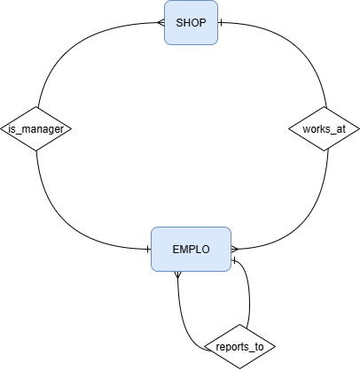
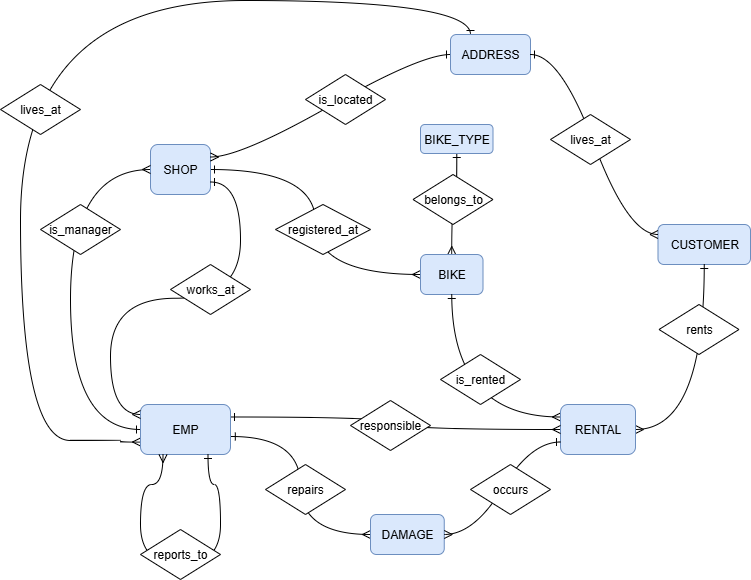

Demo-Seite zum Anzeigen der Übungen
| Thema | HTML | |
| SQL: Simple SELECT | sql_simple | sql_simple |
| sql_simple (solutions) | sql_simple (solutions) | |
| SQL: Advanced SELECT | sql_advanced | sql_advanced |
| sql_advanced (solutions) | sql_advanced (solutions) | |
| SQL: Set Operations | sql_set | sql_set |
| sql_set (solutions) | sql_set (solutions) | |
| SQL: DML Statements | sql_dml | sql_dml |
| sql_dml (solutions) | sql_dml (solutions) |
| DDL-Statements: | create_tables_all.sql |
| INSERT-Statements: | insert_all.sql |

